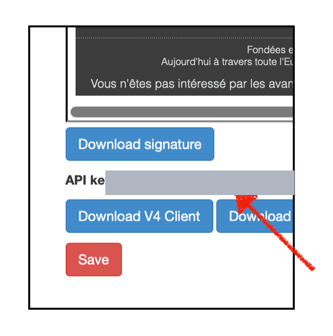
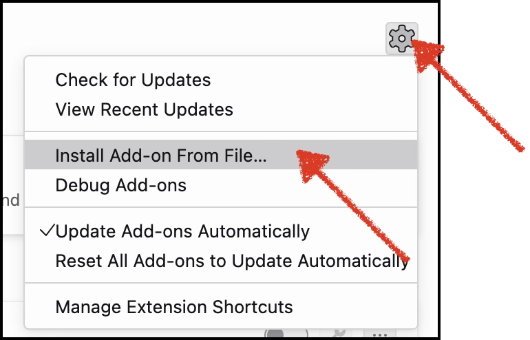

V4 Contacts Checker
Checks whether email addresses in your Thunderbird messages are already leads in V4 Contacts, shows each lead's live status, and lets you jump straight to the right next action in v4.vdm-vsg.de.
Download latestDownload the add-on
Click Download latest above and save
v4_contacts-latest.xpi somewhere you can find it (e.g. Downloads).
Get your V4 API key
Open v4.vdm-vsg.de, go to Account, and copy the API key shown below your signatures. Keep it handy — you'll paste it in step 5.

Adddocs/images/key-account.png
Allow internal add-ons (one-time)
This add-on is distributed internally, so it isn't signed by the public add-on store. You only need to do this once.
 Add
Add docs/images/allow-settings.png
 Add
Add docs/images/allow-config.png
 Add
Add docs/images/allow-false.png
signatures.required → double-click
xpinstall.signatures.required so it reads false.Install from file
 Add
Add docs/images/install-addons.png

Adddocs/images/install-fromfile.png
.xpi you downloaded → confirm Add.Paste your API key
Open Add-ons and Themes → V4 Contacts Checker → Preferences, paste the API key you copied in step 2, and click Save.
You also need to be logged into v4.vdm-vsg.de in your browser
for the Mark buttons to open the right lead.
 Add
Add docs/images/key-paste.png